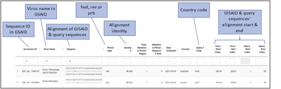

P.R.A.T. (Primer Checker Results Analysis Tool) for SARS-CoV-2 is a tool to help you analyse the GISAID’s Primer Checker results about SARS-CoV-2.
It uses as input a Primer Checker results file containing mutations for forward/reverse primer and probe. One must also input the total number of SARS-CoV-2 variants Primer Checker used.
The results is a series of tables and graphs that can be used in publications presneting the information from the Primer Checker about SARS-CoV-2.
You start your analysis by selecting the Start tab
Here the userThis is an overview of the input GISAID file. All the alignments of the query file used in GISAID are shown here (hence “Original Data”). Here the user may see all alignments of the query sequences with the sequences deposited in GISAID along with any mismatches. For each alignment there is more information that can be searched through the filtering fields at the top of the list. Additionally, the results may be sorted according to any column.
The filter parameters allow for further customization of the analysis results. For the time being the user may specify a more restrictive Date Range or restrict the results to one or more specific countries. The results shown in the ‘Original Data’ column won’t change but the results analysed in the following tabs will.
the number of cumulative mutations, as a total and as a percentage.
the cumulative number of mutations in each position and for each nucleotide for the forward primer.
Same as table 3, for the reverse primer.
The graph for the forward primer can be customized. More specifically, one can customize: